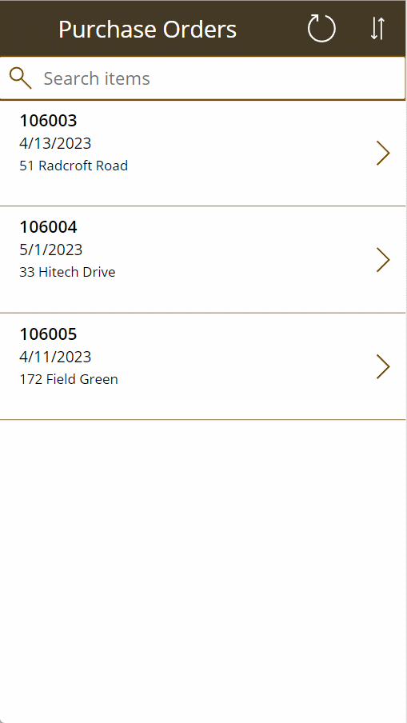
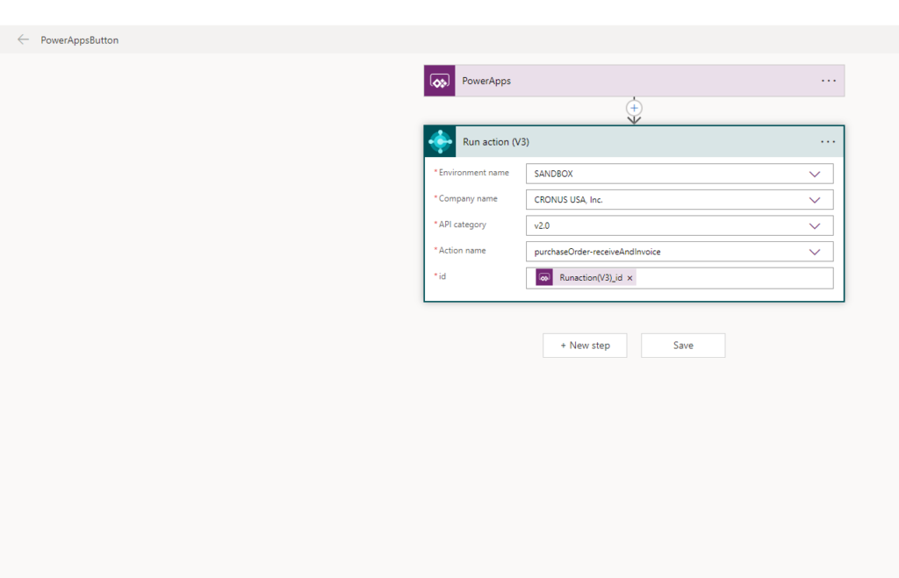

TL/DR:
I got interested in Power Apps, set some goals and managed to build a simple app to Receive Purchase Orders:

Why Power Apps
I've been against Low Code/No Code for as long as I can remember. I've always thought that these tools don't scale, make spaghetti code, restrict me too much and just that I don't need them. I can code everything from scratch and then be ready with my architecture when my application becomes next Twitter or Tiktok. But reality is that I work with LOB's (Line of Business) applications and usually there are only few users and for mobile apps theres only one particular use case per mobile app.
Last week I visited Cloud Tech Tallinn #CTTT23 event and listened to couple of Power Apps workshops and wanted to try if that software really works for my use cases. My use cases for mobile/web apps are always something that connects to Business Central and enchants Business Central in some way.
The goal
I set a goal to build a Mobile App in Power Apps where I can:
- Log in
- See Open Purchase Orders list
- Navigate to Purchase Orders Lines
- Set Received Quantity on Purchase Orders Line
- Press a button and Purchase Order is Received and Invoiced
How it works
I used the standard BC Saas Connector and I used Business Central Saas Sandbox for the backend.
So this means all my data and interaction with Business Central is via HTTP requests.
How to navigate from Purchase Orders -> Purchase Order Lines?
I set global variable in the OnSelect event for the Purchase Orders: Set(SelectedPurchaseorderNo,BrowseGallery1.Selected.id); and then I can use that to filter Purchase Order Lines: Filter('purchaseOrderLines (v2.0)',documentId = SelectedPurchaseorderNo)
How to update quantities on the lines?
I made an input to update the"Received Quantities" on the Purchase Order Lines and use event OnChange with Patch method like this:
Patch('purchaseOrderLines (v2.0)',
LookUp('purchaseOrderLines (v2.0)',
id = ThisItem.id),
{
receiveQuantity:Value(TextInput1.Text)
}
)This will update Purchase Order Line with the Quantity I entered on the app.
How to Receive and Invoice via button press?
To Receive and Invoice a Purchase Order in Business Central I need to call Odata V4 Bound Action on the entity. To do this I used Power Automate:

And now I can attach that to the button OnSelect event like this: PowerAppsButton.Run(SelectedPurchaseorderNo). Here the SelectedPurchaseOrderNo is the global variable that I can pass to the Power Automate.
What do I think after the experiment?
I think Power Apps are good enough to build real Apps for customers. I think there's enough flexibility and after the first learning curve it is productive tool to build these LOB apps.
In this experiment I didn't use Git but I know its now possible to use Git also for versioning. Without Git support I would never have tried the product.
It is marketed as Low Code/No Code but I found that I was writing some code from the start and I had to use my"developer hat" quite a lot.
There are questions I will test and try to answer some time in the future:
- Can I use Service to Service connection instead of the user based connection for the connector?
- How good is the Barcode scanner?
- Can I take pictures and attach to record in Business Central? (I think I can)
- How to manage different companies/environments in Business Central and Power Apps?
- Can I speed up the UX somehow and not wait on every API call to finish, i.e do my interactions and get errors later maybe if not success?
- … and many more questions to come.